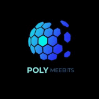
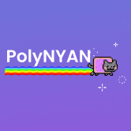
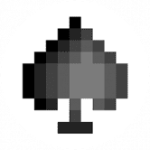

 POLYMEEBITS PolyMeebits 是稀有的 20,000 个独特 3D 头像集合，具有 9 个不同的属性，是 Polygon 智能链上的第一个 Meebits 集合！ 该系列包括：5 Dissected、10 个 Sandeep Nailwal（创始
PolyMiner Yield Mining 应用程序网络，适用于 Ethereum、Polygon Matic、Binance Smart Chain 和 Tron Network。使用来自每个网络的您最喜欢的 DeFi 代币
Polymocha Finance PolyMocha Finance 是 Polygon Matic 网络上的一个新的 DeFi 项目。这是 PolyBrew 项目的第二层，以 MOCHA 为特色，最大供应量为 70,000 个代币。 在审查了几种单产农业模式后，我们决定在我们的平台上采
POLYMONSTERS Monster 是研究和结合 DeFi 生态系统中最好的 Yield Farming 项目的结果。 Monster 向他们学习，甚至改进了有关代币经济学和安全性的关键特性。Monster 很自豪能够向Mons
Polymouse Finance Polymouse Finance 是一个建立在 Polygon 上的去中心化收益农场，其中包括 NFT、IFO 和去中心化 AMM 等其他实用程序。 Polygon的愿景是建造以太坊的区块链互联网。简
 PolyNYAN PolyNYAN 是 Polygon 上的一款有趣的猫代币。就像 Arbitrum 上第一个公平推出的代币 ArbiNYAN 一样，95% 的供应是通过农业奖励分配的。于 10 月 22 日 20:00 UTC 启动。 Polygon的愿景是
Polypulsar Polypulsar 是一个具有单产农业功能的区块链游戏项目。Gamma Polypulsar 是一个用于单产农业和区块链游戏的混合平台。这是我们在区块链上创建 MMORPG 游戏之旅的第四层。该
PolyPup Finance PolyPup Finance 是 Polygon 上的一个新 DeFi 项目，采用通货紧缩代币模型，最大供应量为 31,000 个 PUP 代币。在审查了几种单产农业模式后，PolyPup Finance决定在平台上
PolyQuity PolyQuity 是一种去中心化借贷协议，允许您以 Matic 为抵押品提取无息贷款。贷款以 PUSD（一种与美元挂钩的稳定币）支付，并且需要保持 110% 的最低抵押率。除了抵押
 Polyroll Polyroll 是一个基于 Polygon Network 和 Chainlink 的去中心化赌场。与在黑匣子中运营的传统赌场不同，Polyroll 在公平、透明和不可变的智能合约上运行。 Polyroll 正在通过收益耕作
- OFFWORLD - 穿越异界风景的心灵之旅 - reuko ▶ 什么是-OFFWORLD-？ OFFWORLD - 是一个 NFT（不可替代代币）集合。 存储在区块链上的数字艺术品集合。 ▶ 存在多少 - OFFWORLD
ACTIVAT0R //迷幻激活的庆祝活动// // 机器没有想象力 // 机械思维由源代码控制，随意操作 // // 释放自己 // 开放的思想是通往人类体验的桥梁 // // 可作为 NFT 或物理吸墨
AI WTF AIPES Project X 欢迎来到 AI PROJECT X，这是一个地下 web3 社交俱乐部，您的 NFT 可以兼作您的会员代币 Gang。 AI Project X Apes, Birds and Dogs 代表帮派的基础级别成员，每个 NFT 解锁不同且独特级别
AI-Zuki by GreyStudio.AI ▶ GreyStudio.AI 的 AI-Zuki 是什么？GreyStudio.AI 的 AI-Zuki 是一个 NFT（不可替代令牌）集合。存储在区块链上的数字艺术品集合。 ▶ GreyStudio.AI 的 AI-Zuki 代币有多少？Grey
Akamir - Set Sail 一把钥匙让想象成为现实 Akamir 是一个内容平台。 这是一个由社区创建的数字内容平台。 这个地方将为一起创造和想象内容的元节建造。 Skyland 的 10,000 名船员正在集结起航
Akasuki Genesis 成为 akasukiverse 的一员有很大的好处，而且好处很快就会显现出来。 在该项目启动期间，社区的 ▶ 什么是Akasuki Genesis？Akasuki Genesis 是一个 NF
Akutar Accessories ▶ 什么是 Akutar 配件？Akutar Accessories 是一个 NFT（不可替代代币）系列。存储在区块链上的数字艺术品集合。 ▶ 有多少 Akutar Accessories 代币？总共有 6 个 Akutar Accessories NFT。目前
Alaina Castillo ▶ 什么是 Alaina Castillo？Alaina Castillo 是一个 NFT（非同质代币）集合。存储在区块链上的数字艺术品集合。 ▶ 有多少 Alaina Castillo 代币？总共有 25 个 Alaina Castillo N
Alco Punks ▶ 什么是 Alco Punks？Alco Punks 是一个 NFT（不可替代令牌）集合。是单独存储在区块链上的数字艺术品集合。 ▶ 存在多少 Alco Punks 代币？总共有 606 个 Alco Punks N
Alexis Ren's Stage 您可以访问她的在线社区平台，该平台包含课程和 150 多个健身视频、实时通话、活动和私人聊天，以向 Alexis 和她的网络学习。您还可以与拥有此 NFT 的其他成员会面
Alfie World by Alfie ▶ 什么是 Alfie 的 Alfie World？Alfie 的 Alfie World 是一个 NFT（不可替代令牌）集合。存储在区块链上的数字艺术品集合。 ▶ Alfie World by Alfie 代币有多少个？Alfi
Algorithmic By Depp ▶ 什么是德普的算法？Algorithmic By Depp 是一个 NFT（不可替代令牌）集合。存储在区块链上的数字艺术品集合。 ▶ 存在多少 Algorithmic By Depp 代币？总共有
Alice Through the Looking Glass 近年来，解释机器学习模型的结果已成为默认设置。它使这些 API 的用户对模型的决策过程有了更多的了解，并建立了模型输出的可信度。但是，如果您想知道是
Alien Ape Mining Club Bored Ape Mining Club 是 1,100 名随机生成的猿矿工的集合。建立你的船员，让他们继续寻找星际旅行的关键 Bananium！Genesis Bored Ape Mining Club Collection 的持有者可享受特殊
Alien Ape Pixel Party Alien Ape Pixel Party NFT 在过去 7 天内售出 1 次。Alien Ape Pixel Party 的总销售额为 3.29 美元。一个 Alien Ape Pixel Party NFT 的平均价格为 3.3 美元。有 53 名 Alien Ape Pixel Party 所有者，总共拥有 500 个代币
Alien Archives Alien Archives 是 2,222 个 Alien NFT 的集合——生活在以太坊区块链上的独特数字收藏品。您的 Alien 是您访问 Alien Archives 的专属通行证，并授予您访问会员专属福利的权限。社区可以通过实
Alien Dreams Genesis 我们将 UFO 探测器放置在陆地和太空中。 Alien Dreams Genesis Collection 是您的门票，可帮助推动世界向对不明空中现象 (UAP) 的更深入认识和理解过渡。 项目版税归 NFT 持有者 (50%) 和资助科学
Alien Kids Club - AKC ▶ 什么是外星儿童俱乐部 - AKC？Alien Kids Club - AKC 是一个 NFT（非同质代币）集合。存储在区块链上的数字艺术品集合。 ▶ Alien Kids Club - AKC 代币有多少？总
Alien Punk Things ▶ 什么是外星朋克事物？Alien Punk Things 是一个 NFT（不可替代令牌）集合。存储在区块链上的数字艺术品集合。 ▶ 存在多少 Alien Punk Things 代币？总共有 3,192 个 Alien Punk Things
Alien Punks Ape ▶ 什么是外星朋克猿？Alien Punks Ape 是一个 NFT（Non-fungible token）集合，是存储在区块链上的数字艺术品集合。 ▶ 存在多少 Alien Punks Ape
Alien Wear Club 每个外星人都是通过 ERC-721 标准合约创建的，并通过以太坊区块链上的 IPFS 文件存储进行保护。 Alien Wear 设定在 51 号行星上的外星人对来自人类的时尚感兴趣的时候。来自
AlienAlliance Official 行星地球没有显示出智慧生命的迹象，它是超凡脱俗的，外星人为明天的创新提供了普遍的力量。我们的联盟释放了 10,000 个伪装成人类形态的数字永恒的集合。 与
AlienDood AlienDood NFT 在过去 7 天内售出 2 次。AlienDood 的总销售额为 0.11 美元。一个 AlienDood NFT 的平均价格为 0.1 美元。AlienDood 拥有者 348 名，总供应量为 1,150 个代币
Alienoids NFTs 过去 7 天没有出售 Alienoids NFT。 Alienoids 是一组随机生成的外星人，它们准备降落在地球上。一旦每个外星人都被释放，最高外星人领袖将会降临。害怕它，逃离它，至
AlienPunks NFT 我们喜欢最初的 CryptoPunks 系列，但我们一直认为非人类角色还不够。我们在宇宙中并不孤单。 与 3,000 名新的外星朋克一起探索 AlienPunks 是一种通过从数百万种可能性中生成的
Alienverse DMSG Alienverse - NFT NFT 在过去 7 天内售出 3 次。Alienverse - NFT 的总销售额为 96.06 美元。Alienverse - NFT NFT 的平均价格为 32 美元。有 593 名 Alienverse - NFT 所有者，


 探测器提供资金。")